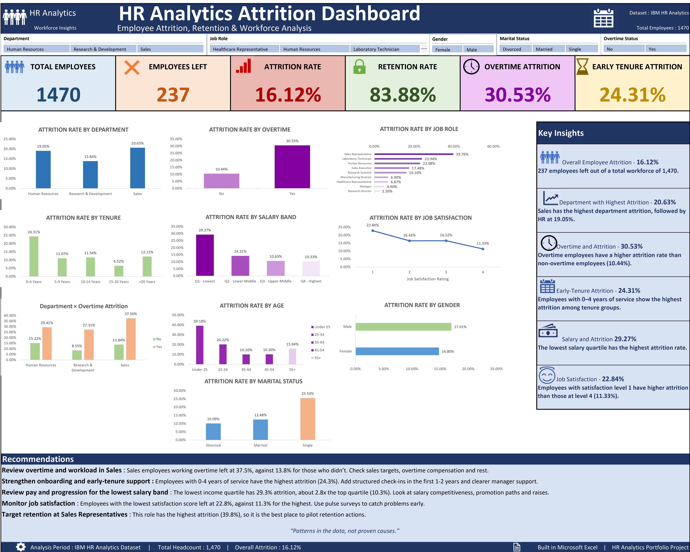

Employees working overtime left at nearly three times the rate of everyone else
I built an Excel dashboard to find out who is leaving a company of 1,470 employees, and where HR should look first.
Attrition rate by overtime
The dashboard


The question
Which groups of employees are leaving the most, and where should HR focus retention efforts?
What I did
I added an attrition flag, salary quartiles, and tenure and age bands to the data. I then built PivotTables to compare attrition across department, job role, overtime, tenure, salary, job satisfaction, age, gender and marital status, and combined them into one interactive dashboard.
Key findings
| Overall | 16.1% attrition: 237 of 1,470 employees left. |
|---|---|
| Overtime | 30.5% with overtime vs 10.4% without, about 2.9 times higher. |
| Sales | Highest department at 20.6%. Sales employees working overtime left at 37.5%. |
| Tenure | Employees with 0-4 years of service had the highest attrition by tenure: 24.3%. |
| Salary | The lowest salary quartile left at 29.3%, against 10.3% in the highest. |
| Job satisfaction | The lowest satisfaction score left at 22.8%, against 11.3% for the highest. |
What HR should do
- Review overtime and workload in Sales. Check sales targets, overtime pay and rest time.
- Strengthen onboarding and early-tenure support. Add structured check-ins in the first one to two years.
- Review pay and progression for the lowest salary band. Look at salary competitiveness, promotion paths and raises.
- Monitor job satisfaction. Use pulse surveys to catch problems early.
- Pilot retention actions with Sales Representatives, the role with the highest attrition.
What I learned
These results are patterns, not proven causes. The overtime, low-salary and early-tenure groups may overlap, and I compared them separately. The next step is to test how they interact, for example overtime attrition within each salary band.
I also learned how a chart axis can change how big a difference looks, which is why every bar chart on the dashboard starts at zero.